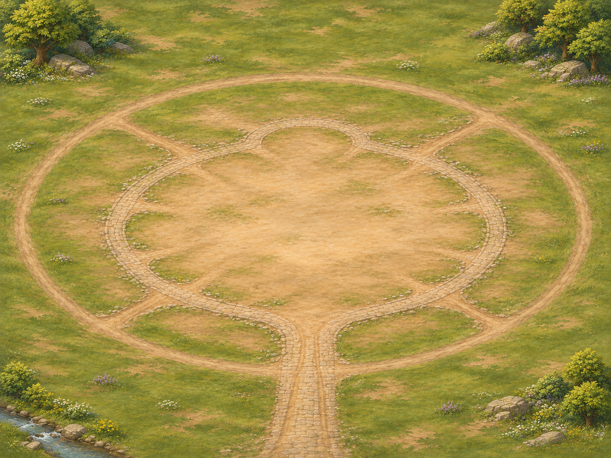
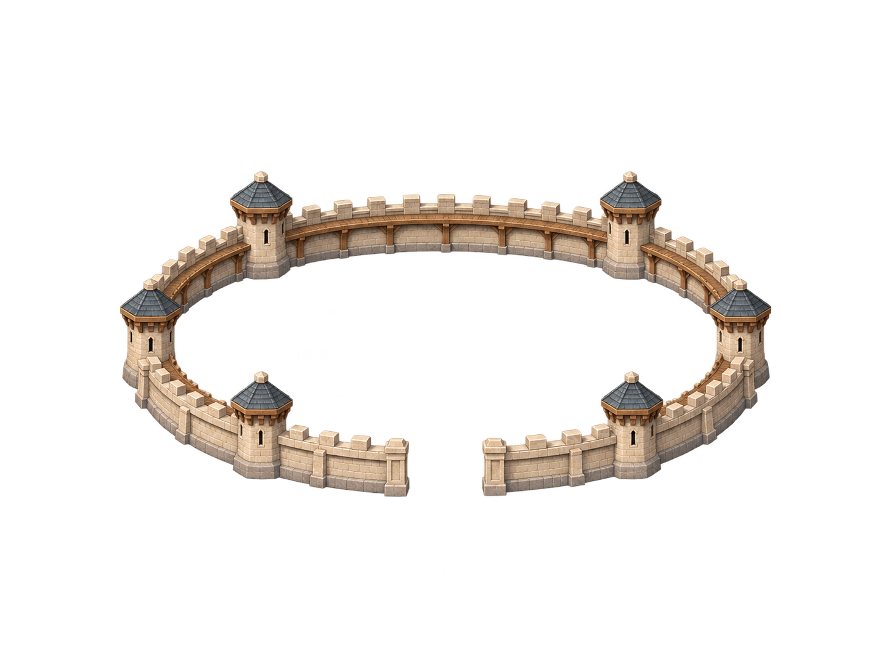
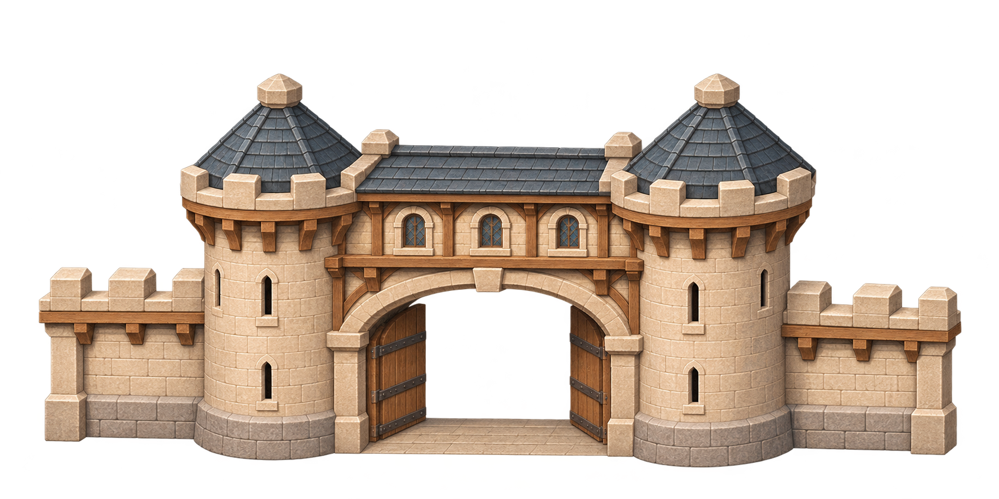

Đá sáng, mái xanh xám, gỗ nâu — cùng phong cách với Phủ thành.



Vòng tường có lối tuần tra, lỗ châu mai và khoảng trống phía trước để ghép cổng.
Cửa mở hai bên, lối đi bằng phẳng ở giữa. Cổng là ảnh riêng để ghép vào vòng tường.
Tạo bằng imagegen. Cả hai PNG có nền trong suốt thật. Đây là mẫu hình ảnh để xem trước; chưa là asset xuất bản đã duyệt và chưa thay vòng tường tạm trong bản chơi.